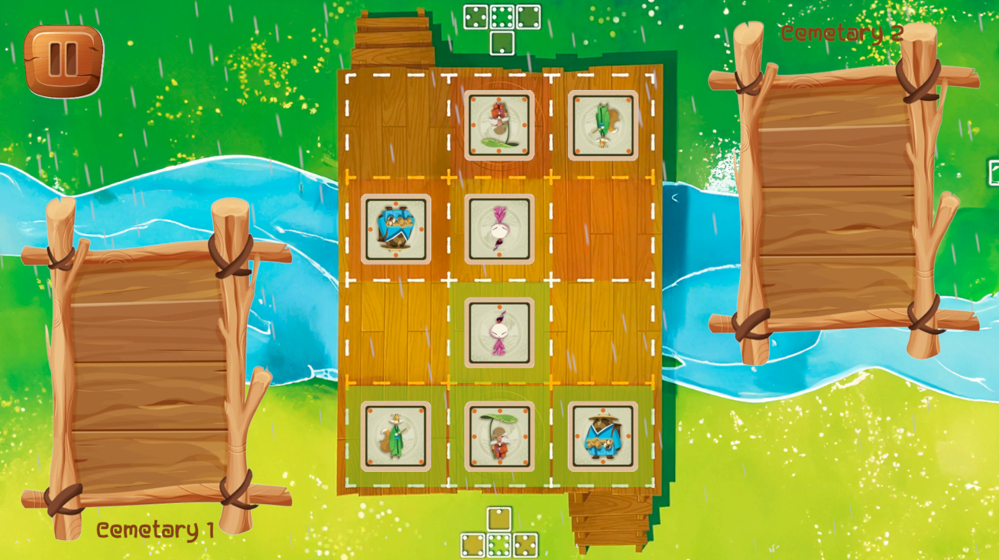

- Minimax with Alpha-Beta Pruning: Ideal for competitive 1v1 games. Optimization is possible to reduce the number of branches explored via pruning.
- Q-Learning: Suitable for games with many possibilities and unpredictable reactions (e.g., FIFA).
- Deep Reinforcement Learning (DRL): Suitable for complex games where AI learns through experience.
- Heuristic Decision Tree: Used for games with well-defined rules established in advance.
- Behavior Tree: A simple approach for behaviors based on specific rules defined through conditions ("if").
- Model-based Planning: Ideal for games with numerous variables but limited response options (e.g., Civilization). This method simplifies the game environment and relies on a mathematical model to predict possibilities.
- Various Optimization Techniques: Includes state definitions to reduce search, combining methods, anticipation, caching information, using object pools, and more.

- Catch the AI -
